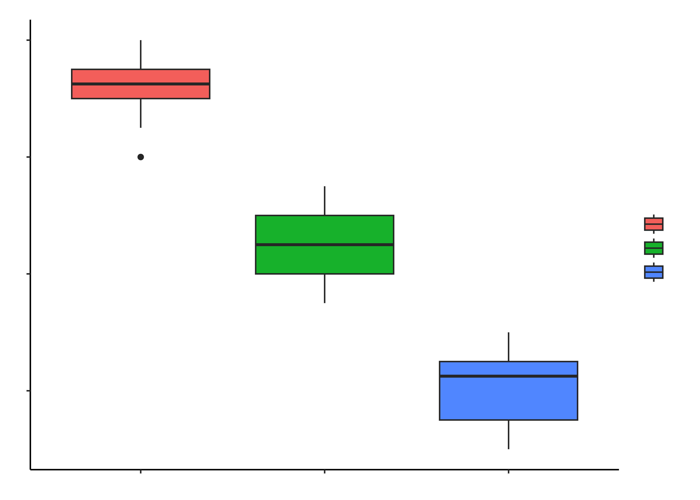
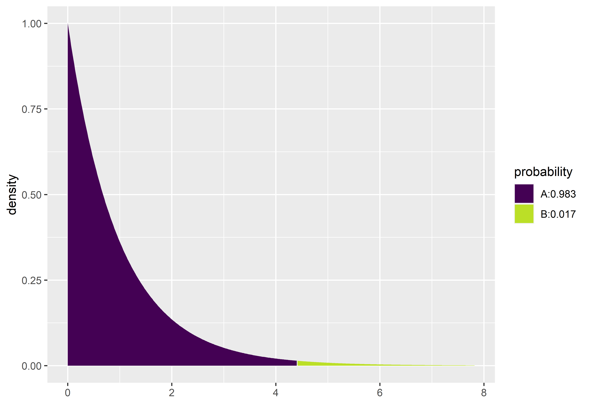
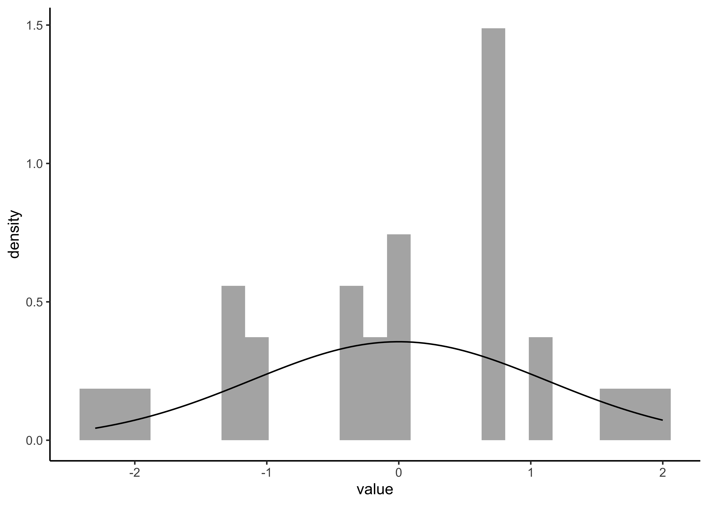
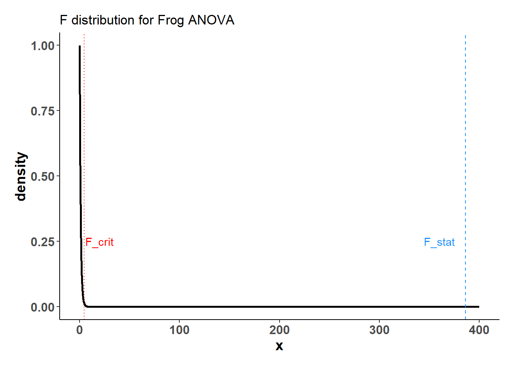
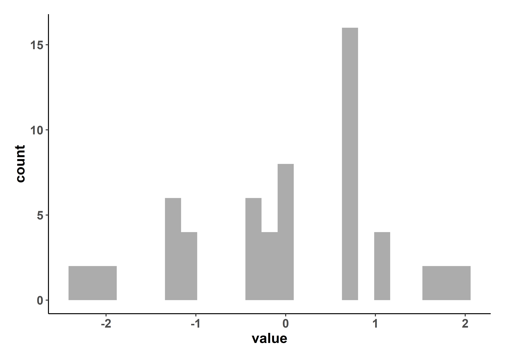
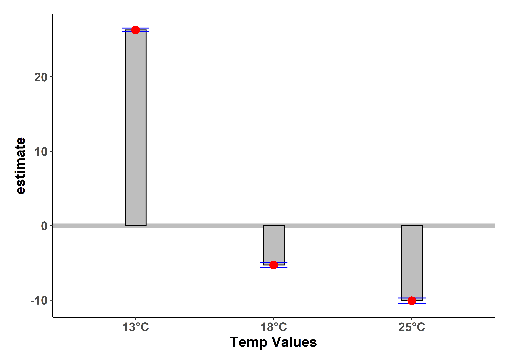

```{r}
#| label: setup
#| message: true
#| warning: false
knitr::opts_chunk$set(echo = TRUE,warning = FALSE,message = FALSE, tidy = TRUE)
library(tidyverse) # Tidy data processing
library(ggformula) # Formula based plots
library(mosaic) # Data inspection and Statistical Inference
library(infer) # Statistical Inference
library(cowplot) # Arranging Plots
```Comparing Multiple Means with ANOVA
Abstract
ANOVA to investigate how frogspawn hatching time varies with temperature.
```{r}
#| label: plot theme
# Let us set a plot theme for Data visualization
library(showtext)
library(sysfonts)
font_add_google("Merriweather Sans", "Merri")
my_theme <- function() {
# Creating a function
theme_classic() + # Using pre-defined theme as base
theme(
text = element_text(family = "Merri"),
plot.title = element_text(face = "bold", size = 14),
axis.text.x = element_text(size = 10, face = "bold"),
# Customizing axes text
axis.text.y = element_text(size = 10, face = "bold"),
axis.title = element_text(size = 12, face = "bold"),
# Customizing axis title
panel.grid = element_blank(),
# Taking off the default grid
plot.margin = unit(c(0.5, 0.5, 0.5, 0.5), units = , "cm"),
legend.text = element_text(size = 8, face = "italic"),
# Customizing legend text
legend.title = element_text(size = 10, face = "bold"),
# Customizing legend title
legend.position = "right",
# Customizing legend position
plot.caption = element_text(size = 8)
) # Customizing plot caption
}
```
Suppose we have three sales strategies on our website, to sell a certain product, say men’s shirts. We have observations of customer website interactions over several months. How do we know which strategy makes people buy the fastest ?
If there is a University course that is offered in parallel in three different classrooms, is there a difference between the average marks obtained by students in each of the classrooms?
In each case we have a set of observations in each category: Interaction Time vs Sales Strategy in the first example, and Student Marks vs Classroom in the second. We can take mean scores in each category and decide to compare them. How do we make the comparisons? One way would be to compare them pair-wise. But with this rapidly becomes intractable and also dangerous: with increasing number of groups, the number of mean-comparisons becomes very large \(N\choose 2\) and with each comparison the possibility of some difference showing up, just by chance, increases! And we end up making the wrong inference and perhaps the wrong decision.
The trick is of course to make comparisons all at once and ANOVA is the technique that allows us to do just that. In this tutorial, we will compare the Hatching Time of frog spawn1, at three different lab temperatures.
In this tutorial, our research question is:
Research Question
How does frogspawn hatching time vary with different temperature settings?
Download the data by clicking the button below.
Data Folder
Save the CSV in a subfolder titled “data” inside your R work folder.
```{r}
frogs_orig <- read_csv("data/frogs.csv")
frogs_orig
```Our response variable is the hatching Time. Our explanatory variable is a factor, Temperature, with 3 levels: 13°C, 18°C and 25°C. Different samples of spawn were subject to each of these temperatures respectively.
The data is badly organized, with a separate column for each Temperature, and a common column for Sample ID. There are NA entries since not all samples of spawn can be subject to all temperatures. (E.g. Sample ID #1 was maintained at 13°C).
We will first stack up the Temperature** columns into a single column, separate that into pieces and then retain just the number part (13, 18, 25), getting rid of the word Temperature from the column titles. Then the remaining numerical column with temperatures (13, 18, 25) will be converted into a factor.
We will use pivot_longer()and separate_wider_regex() to achieve this. [See this animation for pivot_longer(): https://haswal.github.io/pivot/ ]
```{r}
#| layout-ncol: 2
frogs_orig %>%
pivot_longer(
.,
cols = starts_with("Temperature"),
cols_vary = "fastest",
# new in pivot_longer
names_to = "Temp",
values_to = "Time"
) %>%
drop_na() %>%
separate_wider_regex(
cols = Temp,
# knock off the unnecessary "Temperature" word everywhere
# Just keep the digits thereafter
patterns = c("Temperature",
TempFac = "\\d+"),
cols_remove = TRUE
) %>%
# Convert Temp into TempFac, a 3-level factor
mutate(TempFac = factor(
x = TempFac,
levels = c(13, 18, 25),
labels = c("13", "18", "25")
)) %>%
rename("Id" = `Frogspawn sample id`) -> frogs_long
frogs_long
frogs_long %>% count(TempFac)
```So we have cleaned up our data and have 20 samples for Hatching Time per TempFac setting.
Let us plot some histograms and boxplots of Hatching Time:
```{r}
#| results: hold
#| layout-ncol: 2
#| column: screen-inset-right
gf_histogram(data = frogs_long,
~ Time,
fill = ~ TempFac,
stat = "count") %>%
gf_vline(xintercept = ~ mean(Time)) %>%
gf_labs(x = "Hatching Time", y = "Count") %>%
gf_text(7 ~ (mean(Time) + 2),
label = "Overall Mean") %>%
gf_theme(theme = my_theme(),
guides(fill = guide_legend(title = "Temperature level (°C)")))
gf_boxplot(data = frogs_long,
Time ~ TempFac,
fill = ~ TempFac) %>%
gf_vline(xintercept = ~ mean(Time)) %>%
gf_labs(x = "Temperature", y = "Hatching Time") %>%
gf_theme(theme = my_theme(),
guides(fill = guide_legend(title = "Temperature level (°C)")))
```

The histograms look well separated and the box plots also show very little overlap. So we can reasonably hypothesize that Temperature has a significant effect on Hatching Time.
One more slightly esoteric plot: Jitter/Scatter with a new categorical x-axis offered by the ggprism package:
```{r}
#| label: using ggprism
library(ggprism)
gf_jitter(
frogs_long,
Time ~ TempFac,
color = ~ TempFac,
xlab = "Temperature as Factor",
ylab = "Hatching Time",
caption = "Using `ggprism` package"
) %>%
gf_theme(theme_prism(base_family = theme_get()$font$family)) %>%
gf_refine(theme(legend.position = "none"),
scale_x_discrete(guide = "prism_bracket"))
```
Let’s go ahead with our ANOVA test.
We will first execute the ANOVA test with code and evaluate the results. Then we will do an intuitive walk through of the process and finally, hand-calculate entire analysis for clear understanding.
R offers a very simple command to execute an ANOVA test: Note the familiar formula of stating the variables:
```{r}
#| label: ANOVA with code
frogs_anova <- aov(Time ~ TempFac, data = frogs_long)
summary(frogs_anova)
frogs_anova %>% broom::tidy()
summary.lm(frogs_anova) %>% broom::tidy()
frogs_anova %>% broom::glance()
``` Df Sum Sq Mean Sq F value Pr(>F)
TempFac 2 1020.9 510.5 385.9 <2e-16 ***
Residuals 57 75.4 1.3
---
Signif. codes: 0 '***' 0.001 '**' 0.01 '*' 0.05 '.' 0.1 ' ' 1The effect of Temperature on Hatching time is significant, with a p-value of \(<2e-16\). The F-statistic for the ANOVA test is given by \(385.9\), which is very high, and the r.squared value ( to be discussed later) is also large, \(0.931\). Clearly Temperature has a very significant effect on the hatching Time.
To find which specific value of TempFac has the most effect will require pairwise comparison of the group means, using a standard t-test. The confidence level for such repeated comparisons will need what is called Bonferroni correction3 to prevent us from detecting a significant (pair-wise) difference simply by chance. To do this we take \(\alpha = 0.05\), the confidence level used and divide it by \(K\), the number of pair-wise comparisons we intend to make. This new value is used to decide on the significance of the estimated parameter. So the pairwise comparisons in our current data will have to use \(\alpha/3 = 0.0166\) as the confidence level.
All that is very well, but what is happening under the hood of the aov() command?
Consider a data set with a single Quant and a single Qual variable. The Qual variable has two levels, the Quant data has 20 observations per Qual level.
```{r}
#| layout-nrow: 1
#| label: Anova Intuitive
#| warning: false
library(ggtext)
set.seed(42) # for replication
data = tibble(
index = 1:40,
qual = c(rep(x = "A", 20), rep(x = "B", 20)),
quant = c(rnorm(
n = 20, mean = 0, sd = 2
),
rnorm(
n = 20, mean = 10, sd = 2
))
)
data
overall_mean <- data %>%
summarise(overall_mean = mean(quant))
#overall_mean
grouped_means <- data %>%
group_by(qual) %>%
summarise(grouped_means = mean(quant))
#grouped_means
p1 <- gf_segment(
data = data,
color = "black",
overall_mean$overall_mean + quant ~ index + index,
ylab = "quant") %>%
gf_point(quant ~ index,
color = ~ qual,
data = data) %>%
gf_hline(yintercept = ~ overall_mean,
data = overall_mean) %>%
gf_text(4.25 ~ 30,
label = expression(paste(mu, "_tot")),
inherit = F) %>%
gf_theme(my_theme())
p2 <- gf_point(
quant ~ index,
group = ~ qual,
colour = ~ qual,
data = data
) %>%
gf_hline(
yintercept = ~ mean,
colour = ~ qual,
data = data %>%
group_by(qual) %>%
summarise(mean = mean(quant))
) %>%
gf_segment(data = data %>% filter(qual == "A"),
grouped_means$grouped_means[1] + quant ~ index + index) %>%
gf_segment(data = data %>% filter(qual == "B"),
grouped_means$grouped_means[2] + quant ~ index + index) %>%
gf_text(10.0 ~ 10,
label = expression(paste(mu, "_B")),
inherit = F) %>%
gf_text(1 ~ 38,
label = expression(paste(mu, "_A")),
inherit = F) %>%
gf_theme(my_theme())
cowplot::plot_grid(p1, p2, labels = c("Fig A: SST", "Fig B: SSE"))
```
In Fig A, the horizontal black line is the overall mean of quant, denoted as \(\mu_{tot}\). The vertical black lines to the points show the departures of each point from this overall mean. The sum of squares of these vertical black lines in Fig A is called the Total Sum of Squares (SST).
\[ SST = \Sigma (y - \mu_{tot})^2 \tag{1}\]
Note
If there are \(k\) levels in qual and \(n\) observations \(y_ n\) for each level, we can also write:
\[ SST = \sum_{i=1}^{kn}y_i^2 - \frac{ \left( \sum_{i=1}^{kn} y_i \right)^2}{kn} \]
In Fig B, the horizontal green and red lines are the means of the individual groups, respectively \(\mu_A\) and \(\mu_B\). The green and red vertical lines are the departures, or errors, of each point from its own group-mean. The sum of the squares of the green and red lines is called the Total Error Sum of Squares (SSE).
\[ SSE = \Sigma [(y - \mu_i)^2 +... (y - \mu_k)^2] \tag{2}\]
If the \(\mu_A\) and \(\mu_B\) are different from \(\mu_{tot}\), then what would be the relationship between \(SST\) and \(SSE\) ? Clearly if the all means are identical then the \(SST\) and \(SSE\) are equal, since the two coloured lines would be in the same place as the black line. It should be clear that if \(\mu_A\) and \(\mu_B\) are different from the overall mean \(\mu_{tot}\), then \(SSE < SST\).
So, when we desire to detect if the two groups are different in their means, we take the difference:
\[ SSA = SST - SSE \tag{3}\]
\(SSA\) is called the Treatment Sum of Squares and is a measure the differences in means of observations at different levels of the factor.
Note
\(SSA\) can also directly be re-written in a very symmetric fashion as:
\[ \frac{\sum_{i=1}^{k} \left( \sum_{j=1}^{n}y_{ij}\right)^2 }{n} - \frac{\left( \sum_{i=1}^{kn} y_i \right)^2}{kn} \]
Note that in the first term, we are calculating sums of observations within each group in the inner summation, which is like a per-group mean(without the division). The outer summation takes the sum of squares of these undivided summations and divides by \(n\).
Comparing \(SSA\) and \(SSE\) now provides us with a method that helps us decide whether these means are different. \(SSA\) is the leftover unexplained error using \(\mu_{tot}\) as the estimate (NULL Hypothesis). \(SSE\) is the unexplained error using individual means per group (Alternative Hypothesis). The logic in comparing these two global differences and local differences is there must be a significant reduction in unexplained error going from NULL to Alternative Hypothesis.
Before we compare, we need to scale: since each of these measures uses a different set of observations, the comparison is done after scaling each of \(SSA\) and \(SSE\) by the number of observations influencing them. (a sort of “per capita” error). This means that we need to divide each of \(SSA\) and \(SSE\) by their degrees of freedom, which gives us a ratio of variances, the F-statistic:
\[ F_{stat} = \frac{SSA / df_{SSA}}{SSE / df_{SSE}} \]
where \(df_{SSA}\) and \(df_{SSE}\) are respectively the degrees of freedom in \(SSA\) and \(SSE\). And so we are in effect deciding if means are significantly different by analyzing (a ratio of) variances! Hence AN-alysis O-f VA-riance, ANOVA.
In order to find which of the means is significantly different from others, we need to make a pair-wise comparison of the means, applying the Bonferroni correction as stated before. This means we divide the critical p.value we expect by the number of comparisons we make between levels of the Qual variable. More on this shortly.
Now that we understand what aov() is doing, let us hand-calculate the numbers for our frogs dataset and check. Let us visualize our calculations first.


Here is the SST:
```{r}
#| label: SST Total Sum of Squares
#| results: hold
# Calculate overall sum squares SST
frogs_overall <- frogs_long %>%
summarise(mean_time = mean(Time),
# Overall mean across all readings
# The Black Line
SST = sum((Time - mean_time)^2),
n = n())
frogs_overall
SST <- frogs_overall$SST
SST
```[1] 1096.333And here is the SSE:
```{r}
#| label: SSE Within Group Sum of Squares
#| results: hold
# Calculate sums of square errors *within* each group
# with respect to individual group means
frogs_within_groups <- frogs_long %>%
group_by(TempFac) %>%
summarise(mean_time = mean(Time),
variance_time = var(Time),
group_error_squares = sum((Time - mean_time)^2),
n = n())
frogs_within_groups
frogs_SSE <- frogs_within_groups %>%
summarise(SSE = sum(group_error_squares))
SSE <- frogs_SSE$SSE
SSE
```[1] 75.4OK, we have \(SST\) and \(SSE\), so let’s get \(SSA\):
```{r}
#| results: hold
SST
SSE
SSA <- SST - SSE
SSA
```[1] 1096.333
[1] 75.4
[1] 1020.933We have \(SST = 1096\), \(SSE = 75.4\) and therefore \(SSA = 1020.9\).
In order to calculate the F-Statistic, we need to compute the variances, using these sum of squares. We obtain variances by dividing by their Degrees of Freedom:
\[ F_{stat} = \frac{SSA / df_{SSA}}{SSE / df_{SSE}} \]
where \(df_{SSA}\) and \(df_{SSE}\) are respectively the degrees of freedom in SSA and SSE.
Let us calculate these Degrees of Freedom.
With \(k = 3\) levels in the factor TempFac, and \(n = 20\) points per level, \(SST\) clearly has degree of freedom \(kn-1\), since it uses all observations but loses one degree to calculate the global mean. (If each level did not have the same number of points \(n\), we simply take all observations less one as the degrees of freedom for \(SST\)).
\(SSE\) has \(k*(n-1)\) as degrees of freedom, since each of the \(k\) groups there are \(n\) observations and each group loses one degree to calculate its own group mean.
And therefore \(SSA\), being their difference, has \(k-1\) degrees of freedom.
We can still calculate these in R, for the sake of method and clarity:
```{r}
#| label: Degrees of Freedom
# Error Sum of Squares SSE
df_SSE <- frogs_long %>%
# Takes into account "unbalanced" situations
group_by(TempFac) %>%
summarise(per_group_df_SSE = n() - 1) %>%
summarise(df_SSE = sum(per_group_df_SSE)) %>% as.numeric()
## Overall Sum of Squares SST
df_SST <- frogs_long %>%
summarise(df_SST = n() - 1) %>% as.integer()
# Treatment Sum of Squares SSA
k <- length(unique(frogs_long$TempFac))
df_SSA <- k - 1
```The degrees of freedom for the quantities are:
```{r}
#| results: hold
#| layout-ncol: 2
df_SST
df_SSE
df_SSA
```[1] 59
[1] 57
[1] 2Now we are ready to compute the F-statistic: dividing each sum-of-squares byt its degrees of freedom gives us variances which we will compare, using the F-statistic as a ratio:
```{r}
#| results: hold
# Finally F_Stat!
# Combine the sum-square_error for each level of the factor
# Weighted by degrees of freedom **per level**
# Which are of course equal here ;-D
MSE <- frogs_within_groups %>%
summarise(mean_square_error = sum(group_error_squares/df_SSE)) %>%
as.numeric()
MSE
MSA <- SSA/df_SSA # This is OK
MSA
F_stat <- MSA/MSE
F_stat
```[1] 1.322807
[1] 510.4667
[1] 385.8966The F-stat is compared with a critical value of the F-statistic,F_crit which is computed using the formula for the f-distribution in R. As with our hypothesis tests, we set the significance level to \(\alpha = 0.95\), but here with the Bonferroni correction, and quote the two relevant degrees of freedom as parameters to qf() which computes the critical F value as a quartile:
```{r}
#| results: hold
F_crit <-
qf(p = (1 - 0.05/3), # Significance level is 5% + Bonferroni Correction
df1 = df_SSA, # Numerator degrees of freedom
df2 = df_SSE # Denominator degrees of freedom
)
F_crit
F_stat
```[1] 4.403048
[1] 385.8966The F_crit value can also be seen in a plot4,5:
```{r}
#| layout: [[45,45,10]]
gf_dist(dist = "f",
params = list(df1 = df_SSA, df2=df_SSE),
linewidth = 1,
xlim = c(0.002, 400), title = "F distribution for Frog ANOVA") %>%
gf_vline(xintercept = F_crit, linetype = "dotted",
colour = "red") %>%
gf_vline(xintercept = F_stat, linetype = "dashed",
color = "dodgerblue") %>%
gf_text( 0.25 ~ 360, label = "F_stat", colour = "dodgerblue") %>%
gf_text( 0.25 ~ 20, label = "F_crit", colour = "red") %>%
gf_theme(my_theme())
mosaic::xpf(q = F_crit,
df1 = df_SSA, df2 = df_SSE,
log.p = FALSE,lower.tail = TRUE)
```[1] 0.9833333

Any value of F more than the F_crit occurs with smaller probability than \(0.05/3\). Our F_stat is much higher than F_crit, by orders of magnitude! And so we can say with confidence that Temperature has a significant effect on spawn Time.
And that is how ANOVA computes!
ANOVA makes 3 fundamental assumptions:
- Data (and errors) are normally distributed.
- Variances are equal.
- Observations are independent.
We can check these using checks and graphs.
The shapiro.wilk test tests if a vector of numeric data is normally distributed and rejects the hypothesis of normality when the p-value is less than or equal to 0.05.
```{r}
#| label: Check for Normality
shapiro.test(x = frogs_long$Time)
```
Shapiro-Wilk normality test
data: frogs_long$Time
W = 0.92752, p-value = 0.001561The p-value is very low and we cannot reject the (alternative) hypothesis that the overall data is not normal. How about normality at each level of the factor?
```{r}
frogs_grouped <- frogs_long %>%
group_by(TempFac) %>%
nest(.key = "list") # naming the nested column "list"
# Checking if we can purrr
frogs_grouped %>%
pluck("list", 1) %>%
select(Time) %>%
as_vector() %>%
shapiro.test(.)
# OK now we are set for group-wise Shapiro-Wilk testing with purrr:
frogs_grouped %>%
mutate(shaptest =
purrr::map(.x = list, # Column name is "list"
.f = \(.x) select(.data = .x,
Time) %>%
as_vector() %>%
shapiro.test(.)),
params = map(.x = shaptest,
.f = \(.x) broom::tidy(.x))) %>%
select(TempFac, params) %>%
unnest(cols = params)
```
Shapiro-Wilk normality test
data: .
W = 0.88954, p-value = 0.02638The shapiro.wilk test makes a NULL Hypothesis that the data are normally distributed and estimates the probability that this could have happened by chance. Except for TempFac = 18 the p-values are less than 0.05 and we can reject the NULL hypothesis that each of these is normally distributed. Perhaps this is a sign that we need more than 20 samples per factor level. Let there be more frogs !!!
We can also check the residuals post-model:
```{r}
#| layout-ncol: 3
#| column: screen-inset-right
frogs_anova$residuals %>%
as_tibble() %>%
gf_dhistogram(~ value,data = .) %>%
gf_fitdistr() %>%
gf_theme(my_theme())
frogs_anova$residuals %>%
as_tibble() %>%
gf_qq(~ value, data = .) %>%
gf_qqstep() %>%
gf_qqline() %>%
gf_theme(my_theme())
shapiro.test(frogs_anova$residuals)
```
Shapiro-Wilk normality test
data: frogs_anova$residuals
W = 0.94814, p-value = 0.01275

Unsurprisingly, the residuals are also not normally distributed either.
Response data with different variances at different levels of an explanatory variable are said to exhibit heteroscedasticity. This violates one of the assumptions of ANOVA.
To check if the Time readings are similar in variance across levels of TempFac, we can use the Levene Test, or since our per-group observations are not normally distributed, a non-parametric rank-based Fligner-Killeen Test. The NULL hypothesis is that the data are with similar variances. The tests assess how probable this is with the given data assuming this NULL hypothesis:
```{r}
#| layout-ncol: 2
#| column: body-outset-right
#| results: hold
frogs_long %>%
group_by(TempFac) %>%
summarise(variance = var(Time))
# Not too different...OK on with the test
fligner.test(Time ~ TempFac, data = frogs_long)
DescTools::LeveneTest(Time ~ TempFac, data = frogs_long)
```
Fligner-Killeen test of homogeneity of variances
data: Time by TempFac
Fligner-Killeen:med chi-squared = 0.53898, df = 2, p-value = 0.7638It seems that there is no cause for concern here; the data do not have significantly different variances.
This is an experiment design concern; the way the data is gathered must be specified such that data for each level of the factors ( factor combinations if there are more than one) should be independent.
The simplest way to find the actual effect sizes detected by an ANOVA test is to use (paradoxically) the summary.lm() command:
```{r}
tidy_anova <-
frogs_anova %>%
summary.lm() %>%
broom::tidy()
tidy_anova
```It may take a bit of effort to understand this. First the TempFac is arranged in order of levels, and the mean at the \(TempFac = 13\) is titled Intercept. That is \(26.3\). The other two means for levels \(18\) and \(25\) are stated as differences from this intercept, \(-5.3\) and \(-10.1\) respectively. The p.value for all these effect sizes is well below the desired confidence level of \(0.05\).
Standard Errors
Observe that the std.error for the intercept is \(0.257\) while that for TempFac18 and TempFac25 is \(0.257 \times \sqrt2 = 0.363\) since the latter are differences in means, while the former is a single mean. The Variance of a difference is the sum of the individual variances, which are equal here.
We can easily plot bar-chart with error bars for the effect size:
```{r}
tidy_anova %>%
mutate(hi = estimate + std.error,
lo = estimate - std.error) %>%
gf_hline(data = ., yintercept = 0,
colour ="grey",
linewidth = 2) %>%
gf_col(estimate ~ term,
fill = "grey",
color = "black",
width = 0.15) %>%
gf_errorbar(hi + lo ~ term,
color = "blue",
width = 0.2) %>%
gf_point(estimate ~ term,
color = "red",
size = 3.5) %>%
gf_refine(scale_x_discrete("Temp Values",
labels = c("13°C", "18°C", "25°C"))) %>%
gf_theme(my_theme())
```
If we want an “absolute value” plot for effect size, it needs just a little bit of work:
```{r}
# Merging group averages with `std.error`
frogs_long %>%
group_by(TempFac) %>%
summarise(mean = mean(Time)) %>%
cbind(std.error = tidy_anova$std.error) %>%
mutate(hi = mean + std.error,
lo = mean - std.error) %>%
gf_hline(data = ., yintercept = 0,
colour ="grey",
linewidth = 2) %>%
gf_col(mean ~ TempFac,
fill = "grey",
color = "black", width = 0.15) %>%
gf_errorbar(hi + lo ~ TempFac,
color = "blue",
width =0.2) %>%
gf_point(mean ~ TempFac,
color = "red",
size = 3.5) %>%
gf_refine(scale_x_discrete("Temp Values",
labels = c("13°C", "18°C", "25°C"))) %>%
gf_theme(my_theme())
```
In both graphs, note the difference in the error-bar heights.
Using other packages
There is a very neat package called ggstatsplot6 that allows us to plot very comprehensive statistical graphs. Let us quickly do this:
```{r}
#| message: false
library(ggstatsplot)
frogs_long %>%
ggstatsplot::ggbetweenstats(x = TempFac, y = Time,
title = "ANOVA : Frogs Spawn Time vs Temperature Setting")
```
We can also obtain crisp-looking anova tables from the new supernova package 7, which is based on the methods discussed in Judd et al.@sec–references
```{r}
#| layout-nrow: 2
library(supernova)
supernova::supernova(frogs_anova)
supernova::pairwise(frogs_anova)
``` Analysis of Variance Table (Type III SS)
Model: Time ~ TempFac
SS df MS F PRE p
----- --------------- | -------- -- ------- ------- ----- -----
Model (error reduced) | 1020.933 2 510.467 385.897 .9312 .0000
Error (from model) | 75.400 57 1.323
----- --------------- | -------- -- ------- ------- ----- -----
Total (empty model) | 1096.333 59 18.582
group_1 group_2 diff pooled_se q df lower upper p_adj
<chr> <chr> <dbl> <dbl> <dbl> <int> <dbl> <dbl> <dbl>
1 18 13 -5.300 0.257 -20.608 57 -6.175 -4.425 .0000
2 25 13 -10.100 0.257 -39.272 57 -10.975 -9.225 .0000
3 25 18 -4.800 0.257 -18.664 57 -5.675 -3.925 .0000The supernova table clearly shows the reduction the Sum of Squares as we go from a NULL (empty) model to a full ANOVA model.
We wish to establish the significance of the effect size due to each of the levels in TempFac. From the normality tests conducted earlier we see that except at one level of TempFac, the times are are not normally distributed. Hence we opt for a Permutation Test to check for significance of effect.
As remarked in Ernst8, the non-parametric permutation test can be both exact and also intuitively easier for students to grasp. Permutations are easily executed in R, using packages such as mosaic9.
We proceed with a Permutation Test for TempFac. We shuffle the levels (13, 18, 25) randomly between the Times and repeat the ANOVA test each time and calculate the F-statistic. The Null distribution is the distribution of the F-statistic over the many permutations and the p-value is given by the proportion of times the F-statistic equals or exceeds that observed.
We will use mosaic first, and also try with infer.
mosaic offers an easy and intuitive way of doing a repeated permutation test, using the do() command. We will shuffle the TempFac factor to jumble up the Time observations, 4999 times. Each time we shuffle, we compute the F_statistic and record it. We then plot the 4999 F-statistics and compare that with the real-world observation of F-stat.
```{r}
#| label: permutation test for ANOVA with mosaic
obs_F_stat <-
frogs_anova %>%
broom::tidy() %>%
select(statistic)
observed_mosaic <- obs_F_stat$statistic[1]
observed_mosaic
null_dist_mosaic <- do(4999) * aov(Time ~ shuffle(TempFac),
data = frogs_long)
null_dist_mosaic %>% head()
null_dist_mosaic %>% drop_na() %>%
select(F) %>%
gf_histogram(data = ., ~ F,
fill = ~ F >= observed_mosaic,
title = "Null Distribution of ANOVA F-statistic",
xlab = "Simulated F values (using Permutation)",
ylab = "Count") %>%
gf_vline(xintercept = observed_mosaic) %>%
gf_text(750 ~ observed_mosaic - 325, label = "Observed F") %>%
gf_refine(scale_x_continuous(trans = "log10"),
annotation_logticks(),
scale_fill_discrete(name = "Simulated F > Observed F ?")) %>%
gf_theme(my_theme())
```[1] 385.8966
The Null distribution of the F_statistic under permutation shows it never crosses the real-world observed value, testifying as to the strength of the effect of TempFac on hatching Time. And the p-value is:
```{r}
p_value <- mean(null_dist_mosaic$F >= observed_mosaic, na.rm = TRUE)
p_value
```[1] 0We calculate the observed F-stat with infer, which also has a very direct, if verbose, syntax for doing permutation tests:
```{r}
#| label: ANOVA F-statistic with infer
observed_infer <-
frogs_long %>%
specify(Time ~ TempFac) %>%
hypothesise(null = "independence") %>%
calculate(stat = "F")
observed_infer
```We see that the observed F-Statistic is of course \(385.8966\) as before. Now we use infer to generate a NULL distribution using permutation of the factor TempFac:
```{r}
#| label: Permutation using infer
null_dist_infer <- frogs_long %>%
specify(Time ~ TempFac) %>%
hypothesise(null = "independence") %>%
generate(reps = 4999 , type = "permute") %>%
calculate(stat = "F")
head(null_dist_infer)
null_dist_infer %>%
visualise(method = "simulation") +
shade_p_value(obs_stat = observed_infer$stat, direction = "right") +
scale_x_continuous(trans = "log10", expand = c(0,0)) +
coord_cartesian(xlim = c(0.2,500), clip = "off") +
annotation_logticks(outside = FALSE) +
theme_classic()
```
As seen, the infer based permutation test also shows that the permutationally generated F-statistics are nowhere near that which was observed. The effect of TempFac is very strong.
We have discussed ANOVA as a means of modelling the effects of a Categorical variable on a Continuous (Quant) variable. ANOVA can be carried out using the standard formula aov when assumptions on distributions, variances, and independence are met. Permutation ANOVA tests can be carried out when these assumptions do not quite hold.
The ANOVA tutorial at Our Coding Club
Antoine Soetewey. How to: one-way ANOVA by hand. https://statsandr.com/blog/how-to-one-way-anova-by-hand/
ANOVA in R - Stats and R https://statsandr.com/blog/anova-in-r/
Michael Crawley, The R Book,second edition, 2013. Chapter 11.
David C Howell, Permutation Tests for Factorial ANOVA Designs
Marti Anderson, Permutation tests for univariate or multivariate analysis of variance and regression
Judd, Charles M., Gary H. McClelland, and Carey S. Ryan. 2017. “Introduction to Data Analysis.” In, 1–9. Routledge. https://doi.org/10.4324/9781315744131-1.
Patil, I. (2021). Visualizations with statistical details: The ‘ggstatsplot’ approach. Journal of Open Source Software, 6(61), 3167, doi:10.21105/joss.03167
Blake, Adam, Jeff Chrabaszcz, Ji Son, and Jim Stigler. 2023. supernova: Judd, McClelland, & Ryan Formatting for ANOVA Output. https://CRAN.R-project.org/package=supernova.
Dawson, Charlotte. 2022. ggprism: A “ggplot2” Extension Inspired by “GraphPad Prism”. https://CRAN.R-project.org/package=ggprism.
Patil, Indrajeet. 2021. “Visualizations with statistical details: The ‘ggstatsplot’ approach.” Journal of Open Source Software 6 (61): 3167. https://doi.org/10.21105/joss.03167.
Signorell, Andri. 2023. DescTools: Tools for Descriptive Statistics. https://CRAN.R-project.org/package=DescTools.
Wilke, Claus O., and Brenton M. Wiernik. 2022. ggtext: Improved Text Rendering Support for “ggplot2”. https://CRAN.R-project.org/package=ggtext.
Footnotes
The ANOVA tutorial at Our Coding Club.↩︎
Spinoza: Ethics Geometrically Demonstrated: spinoza1665.pdf (earlymoderntexts.com)↩︎
https://www.openintro.org/go/?id=anova-supplement&referrer=/book/ahss/index.php↩︎
Pruim R, Kaplan DT, Horton NJ (2017). “The mosaic Package: Helping Students to ‘Think with Data’ Using R.” The R Journal, 9(1), 77–102. https://journal.r-project.org/archive/2017/RJ-2017-024/index.html.↩︎
mosaic::xpf()gives both a graph and the probabilities.↩︎ggplot2 Based Plots with Statistical Details • ggstatsplot https://indrajeetpatil.github.io/ggstatsplot/↩︎
Ernst, Michael D. 2004. “Permutation Methods: A Basis for Exact Inference.” Statistical Science 19 (4): 676–85. doi:10.1214/088342304000000396.↩︎
Pruim R, Kaplan DT, Horton NJ (2017). “The mosaic Package: Helping Students to ‘Think with Data’ Using R.” The R Journal, 9(1), 77–102. https://journal.r-project.org/archive/2017/RJ-2017-024/index.html.↩︎
Citation
BibTeX citation:
@online{v.2023,
author = {V., Arvind},
title = {Comparing {Multiple} {Means} with {ANOVA}},
date = {2023-03-28},
url = {https://av-quarto.netlify.app/content/courses/Analytics/Inference/Modules/130-ThreeMeansOrMore/ANOVA.html},
langid = {en},
abstract = {ANOVA to investigate how frogspawn hatching time varies
with temperature.}
}
For attribution, please cite this work as:
V., Arvind. 2023. “Comparing Multiple Means with ANOVA.”
March 28, 2023. https://av-quarto.netlify.app/content/courses/Analytics/Inference/Modules/130-ThreeMeansOrMore/ANOVA.html.